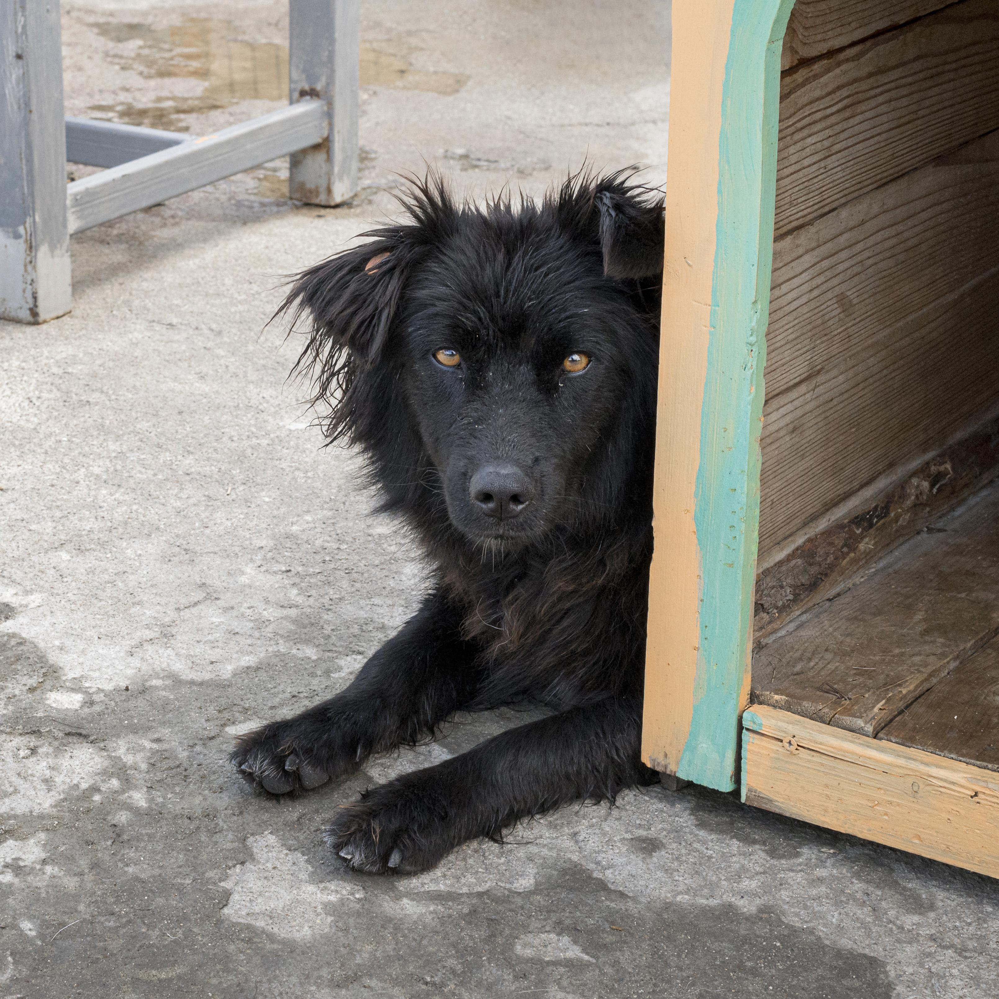
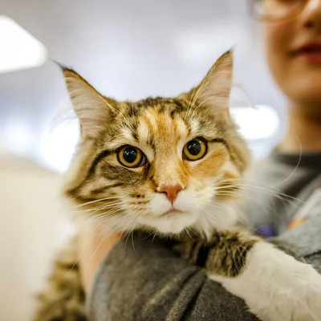
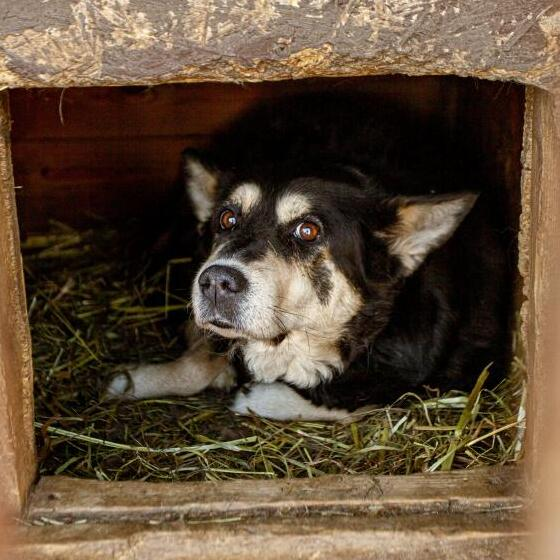
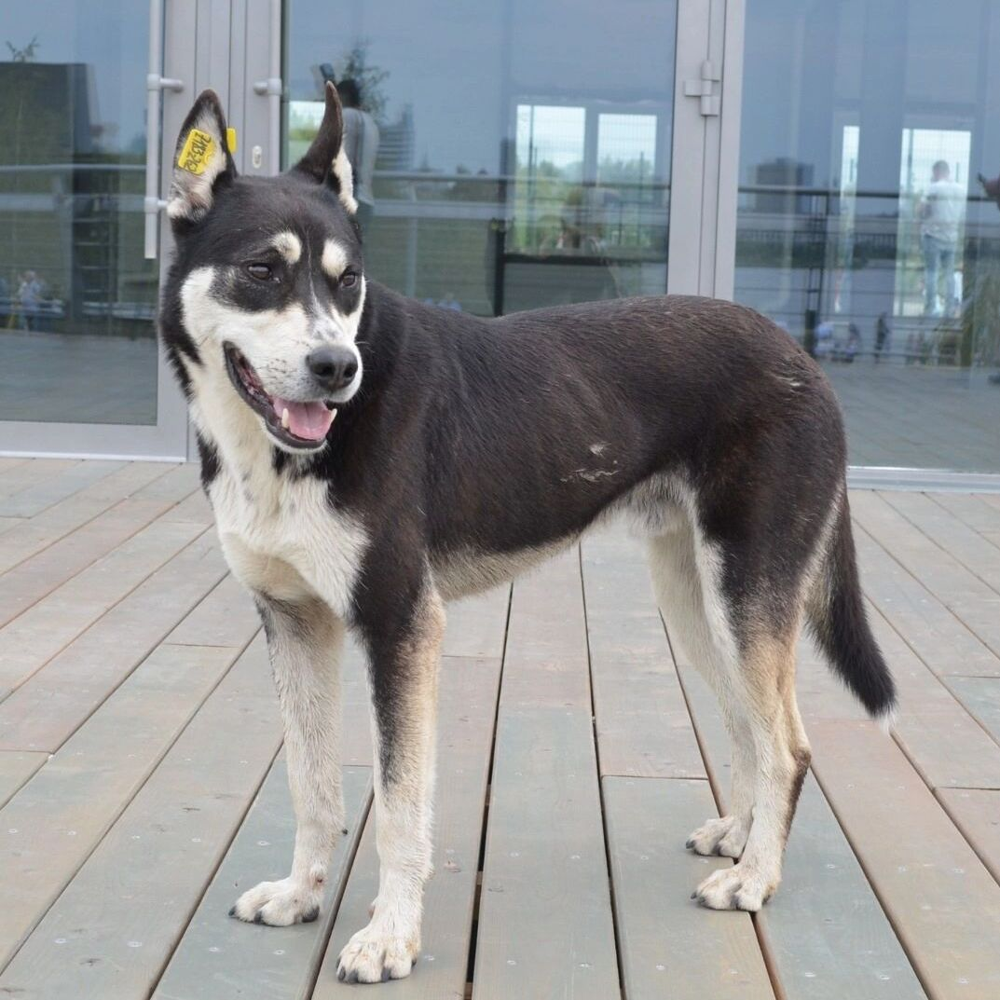
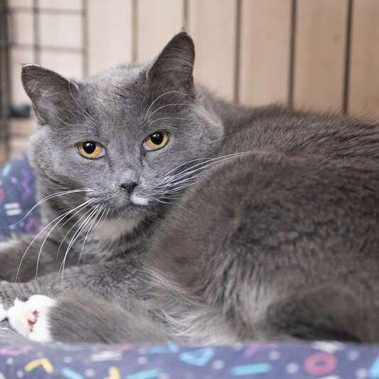
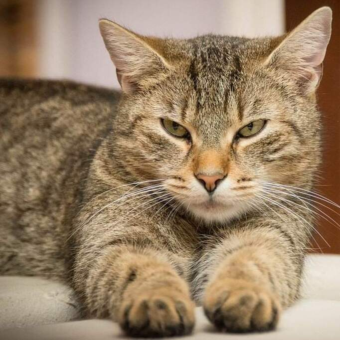

Счастливые истории

Бруно
Его заметили у продуктового магазина. Сейчас он живёт в семье и каждый день гуляет в парке.

Софи
Софи живёт у девушки-студентки и спит только на её подушке.

Рой
Рой стал семейной собакой и каждый день встречает детей из школы.

Оскар
Оскар теперь живёт в доме с садом и стал очень спокойным псом.

Феликс
Феликс нашел спокойный дом и больше не боится людей.

Бублик
Бублик нашёл дом, где его энергию только поддерживают — теперь он постоянно в движении.